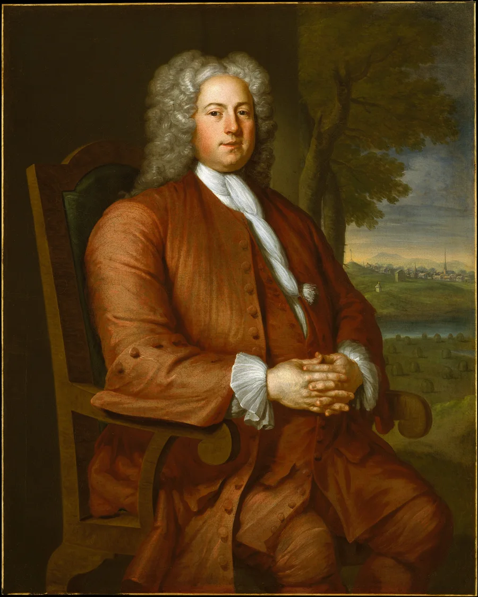

American History · Chapter lesson
Colonial America: settlement, labor, and competing powers
Read a short illustrated account, examine primary sources, and discuss the evidence.
1607–1763
Colonial America: settlement, labor, and competing powers
English settlers established Jamestown in 1607 and Plymouth in 1620. Spanish, French, Dutch, and English colonies developed different relationships with Native nations through trade, diplomacy, religious missions, warfare, and land seizure. Indigenous peoples made strategic choices and resisted colonial control.
Colonial economies depended on many kinds of labor, including enslaved Africans, enslaved Indigenous people, indentured servants, and free workers. Slavery became deeply embedded in colonial laws and commerce. Some colonists practiced forms of representative government while excluding most people from political power.
The French and Indian War, part of the wider Seven Years’ War, ended in 1763. Britain’s victory changed the balance of power in North America; disputes over land, taxes, and imperial authority helped set the stage for revolution.
Discuss: How could representative government and unfree labor exist in the same colony? Whose voices should we seek in colonial records?
Library of Congress: colonial settlement primary sources →